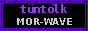

|
t ü n t o l k .:: unofficial fan page ::. since 1999 (on internet since 2000) ::. |
|
[ enter ] [ tüntolk + jolchu ] [ lyrics ] [ kotelnaya nights ] [ guestbook ] [ links ]
|
you came here. so you heard it already. or somebody gave you the cassette and said "listen it in dark". good. tüntolk is Askar Daniyarov and Mira Temirova from Nurzhan. they make music in the boiler room (kotelnaya) on old soviet synthesizers that nobody wanted, and Mira sings in IRADI. not in russian, not in english. in the language of our grandmothers. people call it MOR-WAVE. "mor" is violet, the colour of the sky when the evening comes down on the steppe. this is why this page is violet. (some people say "mor" is from Morkhan. they are also right, maybe. see guestbook, there was a big fight about it.) i am Kanykei, 16 years old, from Nurzhan. at home we speak russian. but after Jolchu i started to learn iradi with my grandmother, every sunday, so i can understand what Mira is singing. now i understand maybe half. grandmother says my accent is "chala" but she is happy. this page is for people who feel the same. it is not official. Askar and Mira don't know about it (i hope).
NEWS the music on this page is NOT tüntolk. i made it myself in a program on my cousin's computer. i will NEVER put their music on internet. buy the cassette or copy it from a friend like everybody. if you don't hear music you have netscape, sorry. |
(the counter is broken so it always says this. i think it is correct anyway)
write me: kanykei_mor@hotmail.com

best viewed at night. with lights off. 800x600.
last update 03.03.2001
[<PREV RAND LIST NEXT> ]